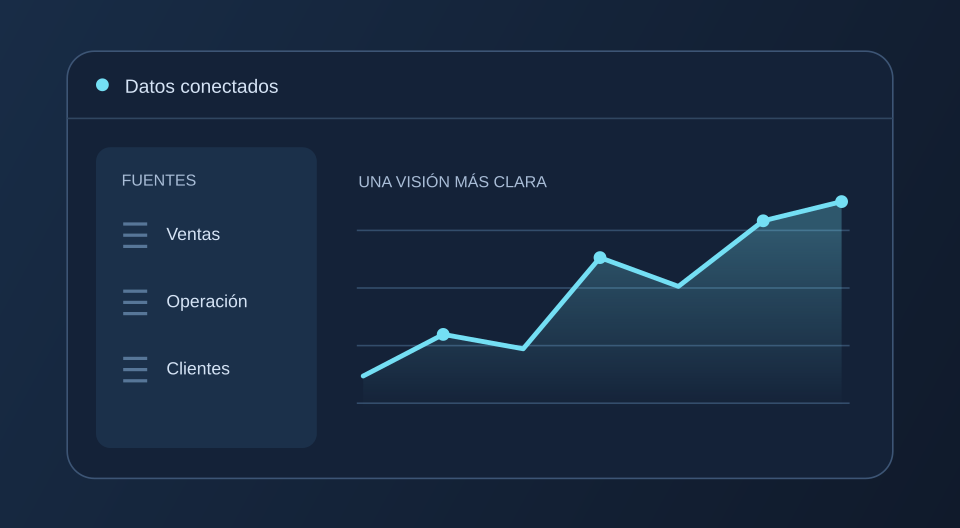
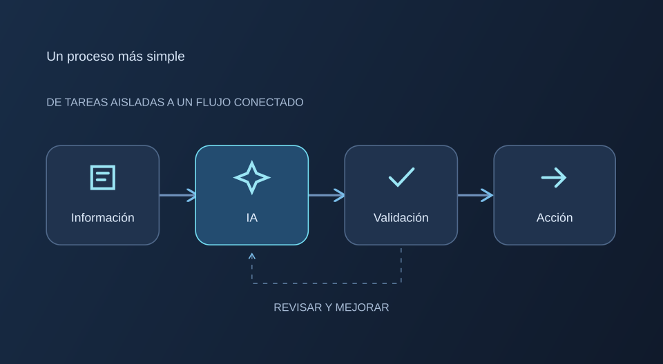

HELTON LIRION / DATOS + IA
Menos fricción.
Más posibilidades.
Conecto datos, inteligencia artificial y negocio para que tu empresa dé el siguiente paso.
LO QUE HAGO
¿Qué necesitas
hacer posible?
Elige un punto de partida.

Entender tus datos.Información conectada.
Decisiones con contexto.
Integración de fuentes, transformación de datos y tableros para entender tu operación.
ETLAnalíticaHablemos de tus datos ↗Aplicar inteligencia.De una idea de IA
a una solución útil.
Evaluación de casos de uso, prototipos e integración de IA en procesos concretos.
IA aplicadaPrototiposExploremos tu idea ↗
Simplificar procesos.Menos tareas repetitivas.
Más espacio para avanzar.
Conexión de herramientas y automatización de flujos con seguimiento y controles definidos.
IntegracionesAutomatizaciónRevisemos tu proceso ↗DETRÁS DE JHLIRION
Helton Lirion.
Negocio y tecnología,
en la misma conversación.
Mi enfoque combina datos, IA y desarrollo de soluciones digitales. Empiezo por entender tu negocio y construyo con un resultado claro en mente.
Entender→Construir→Validar
EMPECEMOS POR UNA CONVERSACIÓN
Trae el reto.
Definamos el camino.
Cuéntame qué quieres mejorar en tu empresa.
EscríbemePrimer paso: entender tu contexto.